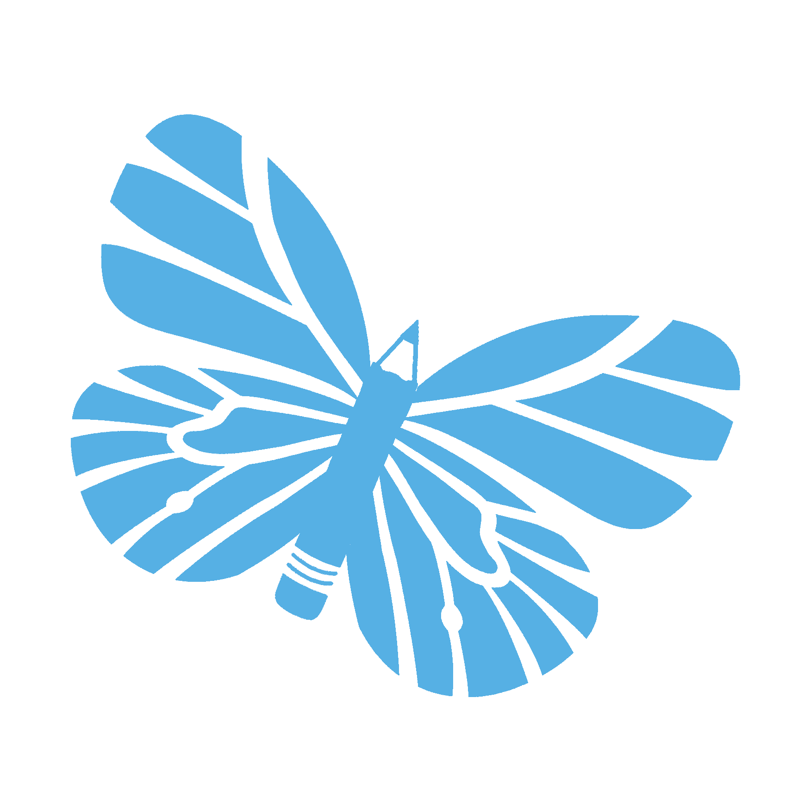
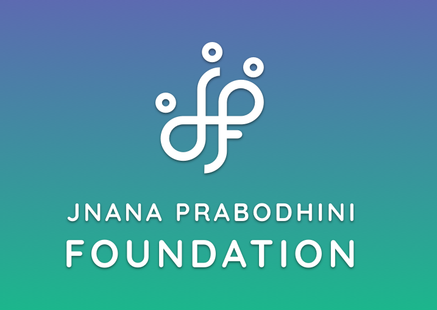
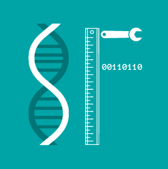
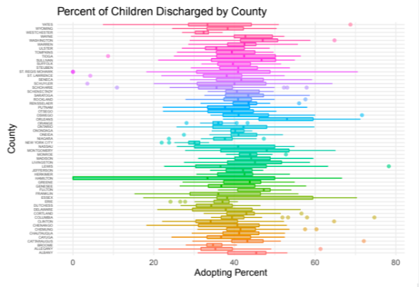
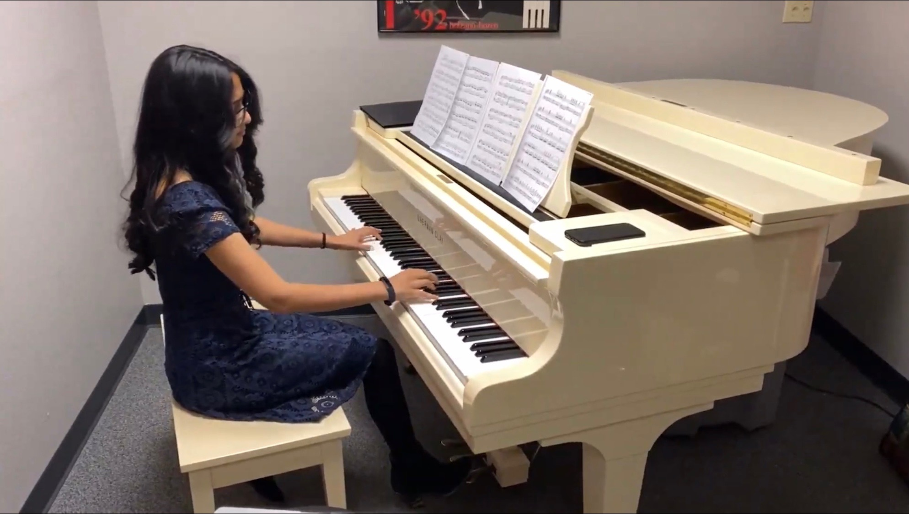

Check out some of my work!

Tutorfly
August, 2021 - Present(Ongoing)
This is tutoring website I signed up for in which I am contacted by different parents to tutor their children in various subjects. I have worked with mostly high schoolers and have taught mostly math all the way up to AP Calculus.
My Profile

Beyond Language Barrier
August, 2021 - Present(Ongoing)
This is an organization I joined where I help teach middle schoolers in my parent's hometown in India, how to speak English fluently. We meet once a week with a new theme, play games, practice vocab words, and read excerpts all relating to the original theme. I enjoy having fun with these girls while also helping them learn a skill that will be useful for the rest of their lives.
Website

STEMFemme
August, 2020 - Present(Ongoing)
This is an organization I co-founded to encourage young girls and non-binary people to pursue careers in STEM. We host guest speakers and workshops and spread awareness about STEM careers through our blog and instagram. As Vice-President, I continue to run the blogs and plan large events such as the college panel.
Website
Instagram

Analysis of OCFS Foster Care
June 26, 2020 - August 14, 2020
This is my final project for a Statistics class I took at Stanford. I've always been passionate about helping improve the foster care system and took the opportunity to choose a foster care dataset to analyze. The goal was to ensure that there is appropriate funding for the system as a whole, and the funding is appropriately distributed amongst the counties of New York.
Report
Presentation

Piano Recitals
2009 - Present(Ongoing)
Playing piano is one of my favorite things to do and I love sharing that with other people too. I've played for school productions, senior centers, my religious group, and more. I've also started private piano lessons for children who want to lean the instrument. I hope to continue learning piano and sharing the beauty of the instrument.
Videos